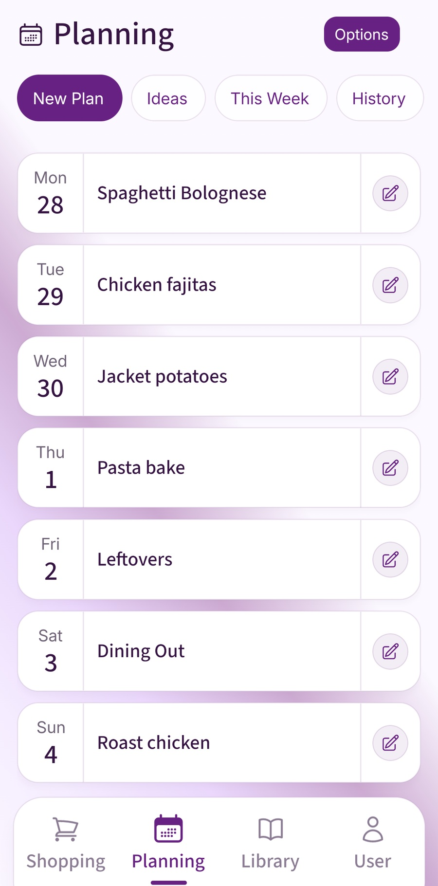

By the time you've worked out another week's dinners, it can feel as though you've done the same job several times already. The household still likes the same pasta, Monday is still busy and everyone still needs feeding next Thursday.
A monthly family meal plan can make those familiar decisions reusable. Start with weeks that have worked, give them a sensible order and adjust each week before you shop. You get a month of starting points while leaving room for real life.
The method works with a notebook, a calendar or saved weekly plans. Begin with dinners if that's where the repeated decisions happen. You can add breakfasts, lunches and other routines later if doing so helps.
Save the weeks that worked
Start with your last few meal plans, or a short list of dinners the household actually ate. Look for a week that fitted the cooking time available, had manageable shopping and didn't depend on everyone arriving home together.
Write down the useful detail. “Pasta” might be too vague to reuse. “Tomato and lentil pasta, four household portions, quick enough after swimming” tells you why that dinner belongs in the pattern. Note any side dishes or substitutions that made it work.
You don't need four perfect weeks before starting. Save one workable week, use it again and make a second version by changing two or three meals. Over time, those versions can become a small collection you trust.
If you haven't planned a week before, use the practical seven-day family meal-plan template to make your first one. The monthly job becomes easier once there is a useful week to reuse.
Build a four-week rotation
Give the recurring busy evenings a reliable type of dinner. A late Monday might need something quick; Saturday might allow a longer recipe. Keep a flexible evening with an easy backup, so a change of plans doesn't leave you without a dinner.
Then vary the meals across four weekly patterns. You can repeat favourites while changing some ingredients or sides. A pattern with a quick pasta on Tuesday could become tomato and lentil pasta one week and mushroom pasta another, depending on what your household eats.
- Keep the useful rhythm: place quick meals on the nights that need them.
- Rotate familiar recipes: start with food people already enjoy rather than commissioning a completely new menu.
- Check the effort across the week: avoid giving the same person several ambitious cooking jobs in a row.
- Name the backup: a flexible slot still needs something you can make if there are no suitable leftovers or changed arrangements.
The number of distinct recipes is up to you. Repeating a popular dinner can be useful; changing every meal simply to fill a new box can bring back the planning work you were trying to reduce.
A practical month of family dinners
Here is an illustrative dinner rotation for a household of four with late Mondays and a flexible Friday. Choose portions, ingredients and substitutions for the people eating. This is a planning example, not a priced shopping basket or a nutritionally assessed menu.
On a small screen, scroll sideways to see all four weeks. Each Friday has a named backup dinner.
| Day | Week A | Week B | Week C | Week D |
|---|---|---|---|---|
| Monday: quick | Beans on toast | Quick tomato pasta | Beans on toast | Quick tomato pasta |
| Tuesday | Tomato and lentil pasta | Chickpea curry with freshly cooked rice | Mushroom pasta | Vegetable chilli with freshly cooked rice |
| Wednesday | Vegetable wraps | Jacket potatoes with beans | Chickpea wraps | Jacket potatoes with chosen toppings |
| Thursday | Chicken or chickpea traybake | Vegetable pasta bake | Vegetable and bean stew | Chicken or chickpea traybake |
| Friday: flexible | Backup: bean wraps | Backup: beans on toast | Backup: quick tomato pasta | Backup: bean wraps |
| Saturday | Vegetable curry | Homemade pizzas | Vegetable chilli | Vegetable curry |
| Sunday | Jacket potatoes with toppings | Roast vegetables and chickpeas | Homemade pizzas | Vegetable pasta bake |
A flexible Friday can accommodate a changed household schedule or suitable food already available. If neither applies, use the named backup. Keep its ingredients available and include the people eating when checking quantities.
Four weeks cover 28 days. A calendar month may need another two or three dinners: borrow from the next pattern, repeat a favourite or add a meal for a specific occasion. Lay the rotation against the actual dates; the first day of the month won't always be a Monday.
This is a set of starting points. If the household doesn't eat mushrooms, replace that pasta once in your own copy. If beans on toast is already a frequent lunch, choose a different quick Monday dinner. Useful repetition depends on your household's routine.
Adjust for the actual calendar
Before the month begins, check the larger commitments: visits, evenings out, shifts and school events. Add who expects to be home and who can cook. Then review the next week in more detail before shopping.
Suppose Week C's Wednesday has a school event. Keep the quick Monday dinner, move the chickpea wraps to Thursday and remove the stew for that week. Wednesday can use the quick pasta backup if people will eat at home. If dinner is already covered elsewhere, mark that instead of shopping for a meal nobody needs.
Friday's backup remains available unless you have used its ingredients. That is a small change to an existing week rather than seven new decisions. The following month, return to the original Week C unless the school event has become a regular commitment.
Check attendance and quantities again when visitors or working arrangements change. A saved four-person dinner won't automatically fit an evening when only two people are eating. Make the change before turning the plan into a shopping list.
For a wider routine around cooking, decisions and sharing responsibilities, see our repeatable family meal-planning system.
Check food and shop one week at a time
A monthly dinner overview doesn't require buying a month's fresh food at once. Before each regular shop, check the fridge, freezer and cupboards, review the next week's meals and buy the missing quantities.
- Confirm the people and evenings. Remove dinners that won't be needed and fit cooking around commitments.
- Check the food at home. Prioritise usable ingredients and adapt a familiar meal where it makes sense.
- Check labels and storage instructions. Put short-window ingredients on suitable evenings or make a safe storage decision.
- Build the current shopping list. Compare recipe needs with supplies, then add breakfast, lunch and household essentials.
- Tell the other cook or shopper what changed. Keep one current version of the coming week.
Use the ingredient-first planning check when the fridge contains food that doesn't match the saved week. Our guide to planning meals around expiry dates explains how date labels affect which meal should come first.
If a later week includes freezer food, check its label and allow for any defrosting it needs. Follow the FSA's freezing and defrosting advice. Repeating a meal name is a planning shortcut; the food still needs checking each time.
Bring a useful week back into the plan
Fameally lets you save full weekly plans to reuse with the Individual and Family plans. Keep the month as an overview, then reuse a suitable saved week and adjust it for the next shop. Saved recipes give you familiar meals to choose from when an evening changes.
Check the resulting ingredient list against supplies at home before buying. With Family, the household can share meals, plans and shopping lists so the other cook or shopper can see the current week.

Keep the changes worth repeating
After a week, make one small note about what helped. A shorter recipe might deserve a permanent place on Monday. A dinner everyone enjoyed could replace a meal that was repeatedly avoided. Save the improved pattern for next time.
Keep temporary changes separate from permanent ones. One birthday meal doesn't need to replace Thursday in every future rotation. A new regular late finish probably does change what Thursday can support.
You can also keep different sets for different seasons or working patterns when you need them. There is no need to create all those versions at the start. Add another useful week when experience gives you a reason.
If you use AI for fresh ideas, check the suggestions against your household and keep only the meals that work in practice. Our guide to AI and family meal planning explores that choice. A saved rotation can still contain a new dinner occasionally.
Build your first monthly rotation
- Save one workable week, then make a few variations.
- Keep quick meals on reliably busy evenings.
- Give flexible nights a named backup.
- Match the four-week rotation to the actual month's dates.
- Review food, attendance and quantities before each shop.
- Save the improvements you want to repeat.
A few common questions
- Do I need 28 different dinners?
- No. Repeat favourites and vary the meals where it helps. The aim is a useful set of weeks you can reuse, with enough flexibility for the household.
- What if the month has 30 or 31 days?
- The four patterns cover 28 days. Add the remaining dinners from the next pattern or choose familiar meals, then check their actual dates and commitments.
- Should I do all the shopping at the start of the month?
- The overview doesn't require that. Review the coming week, check supplies and food labels, and shop at the frequency that suits your household and storage.
- How do I use this with Fameally?
- Keep a month of starting points and work through it as weekly plans. Individual and Family include saved weekly plans to reuse; adjust each coming week and check its shopping list before buying.
Sources and feature checks
Fameally's published saved-plan, recipe and household-sharing features checked on 9 November 2026 against its website and App Store description. This guide uses a monthly overview assembled from weekly plans; the four-week rotation is an illustrative manual method.
- Fameally's planning workflow and saved weekly plans in Individual and Family.
- Fameally App Store description: saved meals and reusable plans.
- Food Standards Agency: chilling, freezing and defrosting, checked on 9 November 2026.
Keep planning
Keep the weeks that work for your household.
Save familiar meals, reuse weekly plans and bring the next shop together in Fameally.